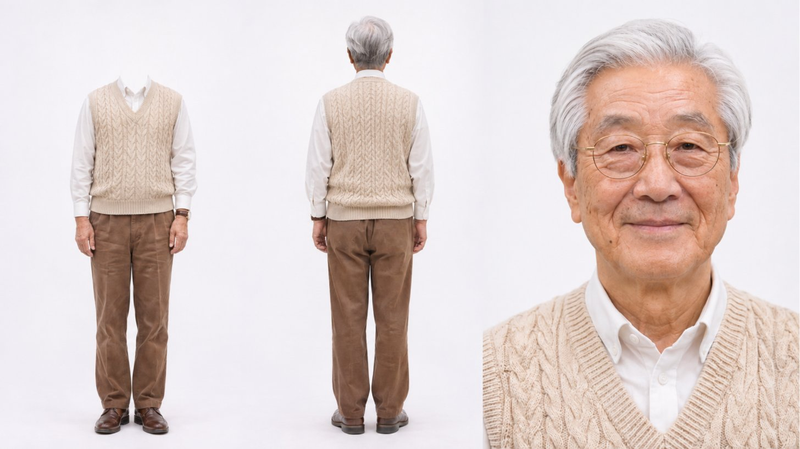
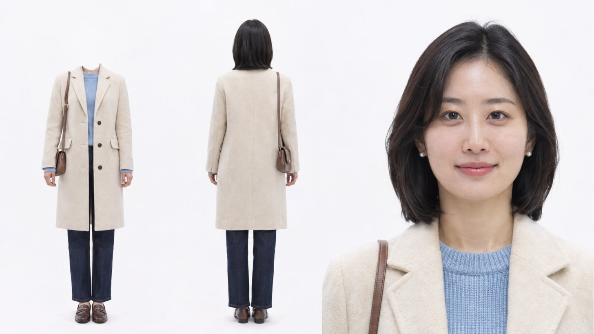
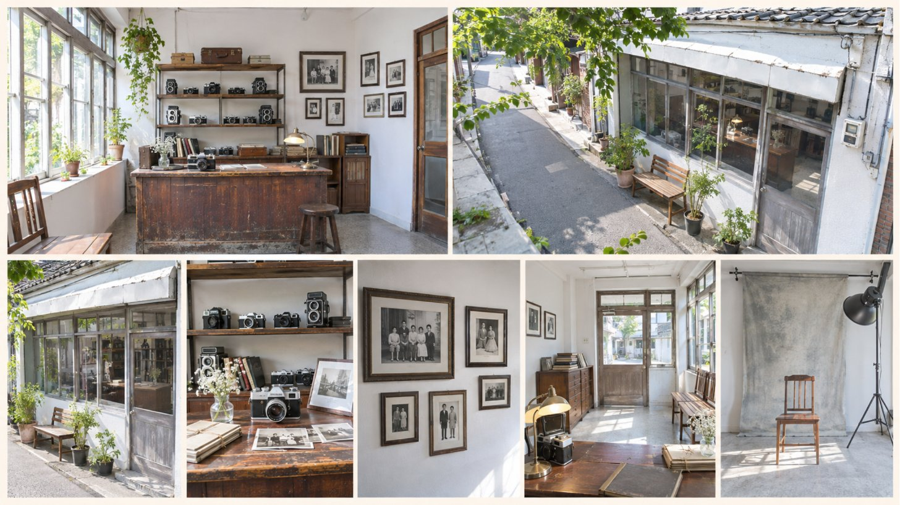
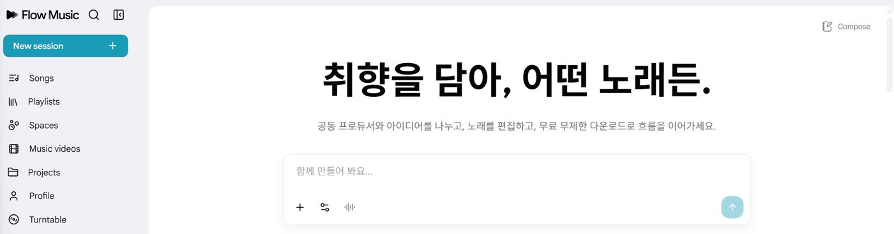

박영수 (70대)
오래된 동네 사진관 주인. 말수가 적고 따뜻함
오래된 동네 사진관 주인. 말수가 적고 따뜻함
김수진 (30대 초반)
돌아가신 엄마의 옛 사진을 들고 찾아온 딸
돌아가신 엄마의 옛 사진을 들고 찾아온 딸
오늘은 예시 하나를 그대로 따라 만들어요. 인물·이야기·카메라 무빙이 모두 정해져 있어서, 노란 복사 버튼 → 붙여넣기(Ctrl+V)만 하면 돼요.
10초 영상 2개 + 배경음악 → 1080p 완성.
30년 전 엄마의 사진을 들고 온 딸에게, 동네 사진관 할아버지가 그날의 이야기를 꺼낸다.
너는 단편영화 감독이야. 아래 로그라인과 인물로 20초 영상의 콘티와 대사를 만들어 줘. [로그라인] 30년 전 엄마의 사진을 들고 온 딸에게, 동네 사진관 할아버지가 그날의 이야기를 꺼낸다. [인물] - 박영수: 70대 남성, 오래된 동네 사진관 주인. 말수가 적고 따뜻함 - 김수진: 30대 초반 여성. 돌아가신 엄마의 옛 사진을 들고 찾아옴 [장소] 맑은 날 오후, 오래된 동네 사진관 안. 나무 카운터, 흑백 가족사진 액자, 밝은 햇살 [조건] - 컷 2개, 컷마다 10초, 가로 16:9 화면 - 대사는 모두 한국어로. 한 사람이 한 컷에 1~2마디, 짧게 - 카메라는 컷마다 반드시 움직여야 해. 고정 화면(static)은 쓰지 마 - 카메라 무빙은 아래 그대로: 컷 1: 0~5초 천천히 다가가기(Push In) → 5~10초 좌우로 돌리기(Pan Shot)로 할아버지에게 시선 이동 컷 2: 0~5초 어깨 너머(Over-the-Shoulder)에서 반원 돌기(Arc Shot) → 5~10초 초점 옮기기(Rack Focus) 후 천천히 멀어지기(Pull Out) - 중학생도 이해할 수 있는 쉬운 말로 [이렇게 정리해 줘] 콘티 표: | 컷 | 시간 | 화면 크기 | 카메라 무빙 | 인물 동작·표정 | 대사 | 화면 크기와 카메라 무빙은 한글로 쓰고 영어 용어를 괄호에 넣어 줘.
오늘 진행할 콘티 (챗GPT 결과는 조금씩 달라요. 영상은 이 콘티대로 만들어요.)
| 컷 | 카메라 무빙 | 동작 · 대사 |
|---|---|---|
| 1 0~10초 | 천천히 다가가기 (Push In) → 좌우로 돌리기 (Pan Shot) | 수진이 낡은 사진을 내민다. 수진: "이 사진… 여기서 찍은 거 맞죠?" 할아버지가 안경을 고쳐 쓰고 들여다본다. 할아버지: "이건… 내가 찍은 사진이구먼." |
| 2 10~20초 | 어깨 너머 반원 돌기 (Over-the-Shoulder · Arc Shot) → 초점 옮기기 (Rack Focus) → 천천히 멀어지기 (Pull Out) | 할아버지가 미소 지으며 사진을 톡톡. 할아버지: "네 엄마가 그날 참 많이 웃었지." 수진이 눈물 고인 채 웃는다. 수진: "고맙습니다." |
가로 16:9 비율로 아래 캐릭터 시트 이미지를 만들어 줘. [인물] 한국어로 말하는 한국인. 70대 남성 박영수, 오래된 동네 사진관 주인. 단정한 흰머리, 주름진 온화한 얼굴, 얇고 둥근 금테 안경, 흰 셔츠 위에 베이지색 꽈배기 니트 조끼, 갈색 면바지, 갈색 가죽 구두, 손목에 낡은 가죽 시계. [캐릭터 시트 형식 — 꼭 이대로] 가로 16:9 이미지 1장을 같은 너비의 세로 3칸으로 나누기. - 왼쪽 칸: 전신 완전 정면. 머리와 얼굴만 보이지 않게 비워 두고(머리 자리는 흰 배경), 목·어깨부터 발끝까지 보이게. - 가운데 칸: 전신 뒷모습. 머리 끝부터 발끝까지. - 중요: 왼쪽과 가운데 인물은 키·몸 크기·서 있는 높이가 완전히 똑같아야 해. 같은 카메라 거리에서 찍은 것처럼 몸을 확대하지 말고, 두 칸 모두 발끝이 같은 높이의 바닥에 닿고, 발 아래와 머리 위에 여백이 있게. - 오른쪽 칸: 정면 얼굴 클로즈업. 머리부터 가슴까지, 카메라를 똑바로 보는 모습. - 세 칸 모두 같은 사람, 같은 옷, 같은 머리 모양, 같은 신발과 액세서리. - 차렷 자세, 팔은 자연스럽게 내림. [촬영] 흰 배경, 확산광(diffused light)으로 부드럽게 촬영, 캐논 R3(Canon EOS R3), 50mm 렌즈, 조리개 f/1.2, 실사 사진, 패션 룩북 느낌. [얼굴 클로즈업 디테일 — 실제 사람처럼] 피부 모공과 솜털, 눈썹과 머리카락 한 올 한 올, 눈가 잔주름과 입술 잔주름, 코의 자연스러운 유분, 홍채의 갈라진 결무늬, 눈 흰자의 가는 핏줄. 글자, 이름표, 칸 사이 선이나 테두리 없음.

▲ 완성 예시 — 왼쪽 앞모습(머리 없음) · 가운데 뒷모습 · 오른쪽 얼굴. 앞·뒤 키가 똑같아요.
가로 16:9 비율로 아래 캐릭터 시트 이미지를 만들어 줘. [인물] 한국어로 말하는 한국인. 30대 초반 여성 김수진. 어깨 길이의 검은 생머리 단발, 자연스러운 화장, 순한 눈매, 하늘색 니트 위에 크림색 울 코트, 진청 일자 바지, 갈색 로퍼, 작은 갈색 숄더백, 작은 진주 귀걸이. [캐릭터 시트 형식 — 꼭 이대로] 가로 16:9 이미지 1장을 같은 너비의 세로 3칸으로 나누기. - 왼쪽 칸: 전신 완전 정면. 머리와 얼굴만 보이지 않게 비워 두고(머리 자리는 흰 배경), 목·어깨부터 발끝까지 보이게. - 가운데 칸: 전신 뒷모습. 머리 끝부터 발끝까지. - 중요: 왼쪽과 가운데 인물은 키·몸 크기·서 있는 높이가 완전히 똑같아야 해. 같은 카메라 거리에서 찍은 것처럼 몸을 확대하지 말고, 두 칸 모두 발끝이 같은 높이의 바닥에 닿고, 발 아래와 머리 위에 여백이 있게. - 오른쪽 칸: 정면 얼굴 클로즈업. 머리부터 가슴까지, 카메라를 똑바로 보는 모습. - 세 칸 모두 같은 사람, 같은 옷, 같은 머리 모양, 같은 신발과 액세서리. - 차렷 자세, 팔은 자연스럽게 내림. [촬영] 흰 배경, 확산광(diffused light)으로 부드럽게 촬영, 캐논 R3(Canon EOS R3), 50mm 렌즈, 조리개 f/1.2, 실사 사진, 패션 룩북 느낌. [얼굴 클로즈업 디테일 — 실제 사람처럼] 피부 모공과 솜털, 눈썹과 머리카락 한 올 한 올, 눈가 잔주름과 입술 잔주름, 코의 자연스러운 유분, 홍채의 갈라진 결무늬, 눈 흰자의 가는 핏줄. 글자, 이름표, 칸 사이 선이나 테두리 없음.

▲ 완성 예시
✔️ 확인: 왼쪽(앞)과 가운데(뒤) 인물의 키와 발 위치가 같은지 보세요.
왼쪽 칸에 머리가 보이면, 같은 채팅에 아래 수정 프롬프트를 넣으세요.
좋아, 키와 크기는 이대로 완벽해. 딱 하나만 고쳐 줘: 왼쪽 칸(전신 정면) 인물의 머리와 얼굴만 지워서 그 자리를 흰 배경으로 비워 줘. 목·어깨부터 발끝까지는 지금 크기와 위치 그대로 두고, 가운데·오른쪽 칸은 바꾸지 마.
가로 16:9 비율로 아래 공간 시트 이미지를 만들어 줘. [공간] 맑은 날 오후, 작고 오래된 한국 동네 사진관과 그 앞 골목. 낡은 나무 카운터, 나무 선반 위의 옛날 필름 카메라들, 벽에 걸린 흑백 가족사진 액자, 작은 유리문, 카운터 위 작은 스탠드 조명. 큰 창으로 밝은 햇살이 들어오는 밝은 실내, 하얀 벽. [공간 시트 형식 — 꼭 이대로] 연한 아이보리색 종이 배경 위에 사진 7장을 콜라주로 배치. 사진 사이에는 얇은 여백. - 윗줄: 가로로 넓은 사진 2장 · 왼쪽: 입구 쪽에서 눈높이로 바라본 사진관 안 전경 (카운터, 선반, 액자가 모두 보이게) · 오른쪽: 높은 곳에서 내려다본 사진관과 골목 전경 (하이 앵글, high angle) - 아랫줄: 세로로 긴 사진 5장, 각각 다른 각도의 디테일 · 골목에서 바라본 사진관 유리문과 외관 · 카운터 위 옛날 필름 카메라와 빛바랜 사진들 · 벽에 걸린 흑백 가족사진 액자들 · 카운터 뒤에서 입구 유리문 쪽을 바라본 반대 방향 · 사진 촬영용 나무 의자와 배경 천, 촬영 조명 - 7장 모두 같은 장소, 같은 시간대, 같은 빛 [촬영 — 실제 사진처럼] - 카메라: 캐논 EOS R5, 렌즈 RF 24-70mm f/2.8 - 설정: 조리개 f/8, ISO 100, 셔터 1/250초 — 앞부터 뒤까지 모두 선명하게 - 맑은 날의 밝은 자연광, 밝은 노출, 그림자 적게 - 색은 자연스럽고 중립적으로 (노랗거나 주황빛으로 물들지 않게) - 실제 카메라로 찍은 스냅 사진처럼. 영화 같은 진한 색보정, HDR, 그림 같은 느낌 없음 - 사람 없음. 글자, 간판, 문자 없음

▲ 완성 예시 — 윗줄 전경 2장(눈높이 · 내려다보기) · 아랫줄 디테일 5장
① 새 프로젝트
② 박영수 캐릭터 만들기
한국어로 말하는 한국인. 70대 남성, 오래된 동네 사진관 주인. 말수가 적고 따뜻하며, 느리고 낮은 목소리로 말한다.
한국어로 말함. 70대 할아버지처럼 느리고 따뜻하게, 낮고 차분한 목소리.
③ 김수진 캐릭터 만들기 — ②와 똑같이, 사진은 김수진.jpg, 목소리는 Achernar (여성, 부드러운 목소리)
한국어로 말하는 한국인. 30대 초반 여성. 돌아가신 엄마의 옛 사진을 들고 사진관을 찾아온 딸. 조용하고 다정하게 말한다.
한국어로 말함. 30대 여성처럼 조용하고 다정하게, 부드럽고 차분한 목소리.
④ 사진관 공간 시트 올리기
파일 이름이 그대로 이름표가 돼요. 그래서 3·4단계에서 박영수 · 김수진 · 사진관으로 저장해 두는 게 중요해요.
[@사진관] 속 오래된 사진관, 맑은 날 오후, 창으로 들어오는 밝은 햇살. [@김수진](30대 여성)이 나무 카운터로 다가와, 빛바랜 옛날 사진 한 장을 [@박영수] 할아버지 쪽으로 조심스럽게 밀어 건넨다. 수진이 한국어로 조용히 말한다: "이 사진… 여기서 찍은 거 맞죠?" 할아버지는 둥근 금테 안경을 고쳐 쓰고 몸을 숙여 사진을 들여다보다가, 놀란 표정으로 한국어로 조용히 말한다: "이건… 내가 찍은 사진이구먼." 카메라: 0~5초 두 사람이 다 보이는 넓은 화면(medium wide shot)에서 천천히 다가가기(Push In) → 5~10초 좌우로 돌리기(Pan Shot)로 할아버지 얼굴 쪽으로 시선 이동. 눈높이(eye level), 배경은 흐리게(shallow depth of field). 실사, 영화 같은 느낌, 얼굴과 옷은 [@박영수], [@김수진]과 똑같이. 모든 대사는 한국어. 영어로 말하지 않음. 음악 없음, 배경음악 없음, 자막 없음, 화면에 글자 없음.
⚠️ x1인지 꼭 확인! x2면 30크레딧이 한 번에 빠져요.
설정은 6번과 똑같아요. 프롬프트를 바꿔 넣고, 노란 칸을 @로 바꿔 주세요.
[@사진관] 속 같은 사진관, 맑은 날 오후의 밝은 햇살. [@김수진]의 어깨 너머로 [@박영수] 할아버지의 얼굴이 보인다. 할아버지가 사진에서 고개를 들고 따뜻하게 미소 지으며, 손가락으로 사진을 톡톡 치면서 한국어로 조용히 말한다: "네 엄마가 그날 참 많이 웃었지." 수진의 눈에 눈물이 고이고, 작게 웃으며 한국어로 말한다: "고맙습니다." 카메라: 0~5초 어깨 너머(Over-the-Shoulder)에서 천천히 반원 돌기(Arc Shot)로 수진의 얼굴 쪽으로 이동 → 5~10초 초점 옮기기(Rack Focus)로 카운터 위 사진에서 수진의 얼굴로 초점이 넘어간 뒤, 천천히 멀어지기(Pull Out)로 두 사람이 함께 보이게. 눈높이(eye level), 창으로 들어오는 밝은 자연광(natural daylight). 실사, 영화 같은 느낌, 얼굴과 옷은 [@박영수], [@김수진]과 똑같이. 모든 대사는 한국어. 영어로 말하지 않음. 음악 없음, 배경음악 없음, 자막 없음, 화면에 글자 없음.
파일은 다운로드 폴더에 「그날의_사진_컷1_…mp4」로 저장돼요. 영상 구석 워터마크는 무료 계정이라 생겨요.

▲ 플로우 뮤직 첫 화면 — 가운데 「함께 만들어 봐요…」 칸에 프롬프트를 넣어요. 가사 칸은 따로 없어요.
가사 없는 연주곡(Instrumental)만 만들어 줘. 가사 없음, 노래 없음, 보컬 없음, 허밍·코러스·말소리도 없음. 맑은 오후, 오래된 동네 사진관에서 돌아가신 엄마의 옛 사진으로 추억을 나누는 20초짜리 짧은 영화의 배경음악. 따뜻하고 그리운 어쿠스틱 곡. 부드러운 피아노와 어쿠스틱 기타, 느린 템포(약 70 BPM). 조용하게 시작해서 중간에 살짝 벅차오르고, 부드럽게 끝나기.
💡 가사 넣는 칸은 따로 없어요. 프롬프트의 「가사 없음」 문장이 가사를 막아 줘요.
✂️ 캡컷은 마우스가 있는 곳(주황색 선)에서 잘라요. 엉뚱한 곳이 잘리면 Ctrl+Z로 되돌리기!
💎 보석·Pro 표시가 있는 효과는 유료라서 쓰지 마세요.
완성 파일은 내보내기 칸에 적힌 곳(보통 바탕화면)에 「그날의 사진.mp4」로 저장돼요. 틱톡·유튜브 공유 버튼은 누르지 않아도 돼요.
🎉 「그날의 사진」 완성!